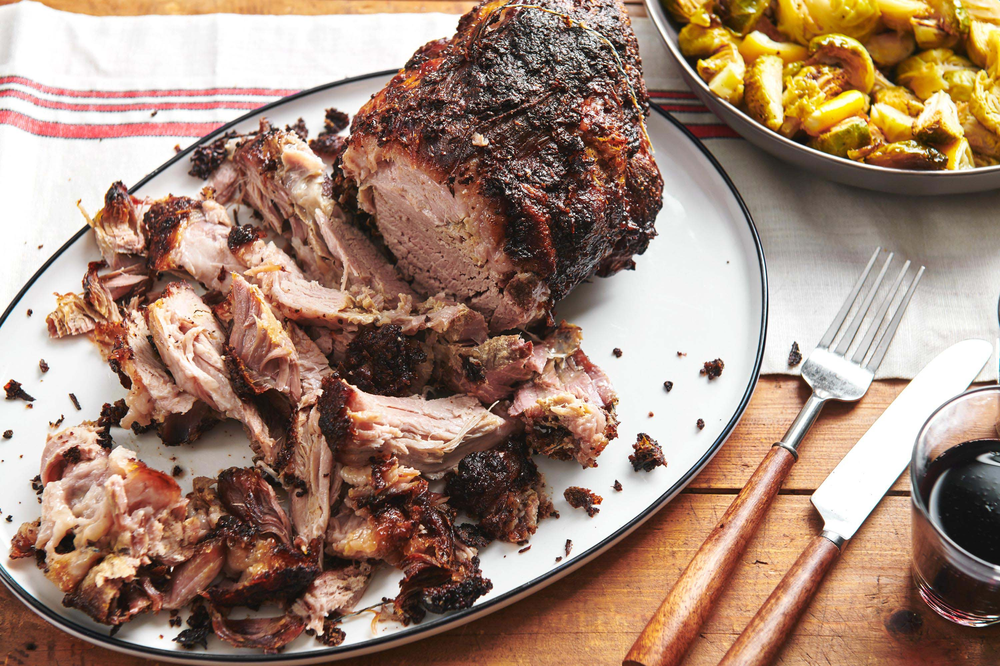

Roasted Pork Shoulder with Fennel and Confit

Description
The following recipe is a slow-cook method for
those who like their meats to retain plenty of moisture.
The preperation of confit is a way to take advantage
of the cooking fats to add a more robust flavor to the meal.
Ingredients
- Raw Pork shoulder
- Garlic Powder
- Fennel
- Salt
- pepper
- arrowroot
Steps
- Rinse pork shoulder and season with Garlic, Fennel, Salt, and Pepper
- Let seasoned pork shoulder sit in fridge for 24 hours
- Add two tbsp of olive oil or butter to cast iron pan over medium low heat
- Set oven to 300 degrees
- Raise heat to medium high, searing pork
shoulder on both sides until achieving desired crisp
- With the fat side up, place pork
shoulder in the oven, in the cast iron pan used for searing
- Cook shoulder in the oven for 2hrs and 45mins, checking periodically
- Once the shoulder is done cooking,
remove from oven and let rest on cutting board
- Add arrowroot to the fat and oil in the pan to thicken into sauce
- pour confit over sliced pork and serve